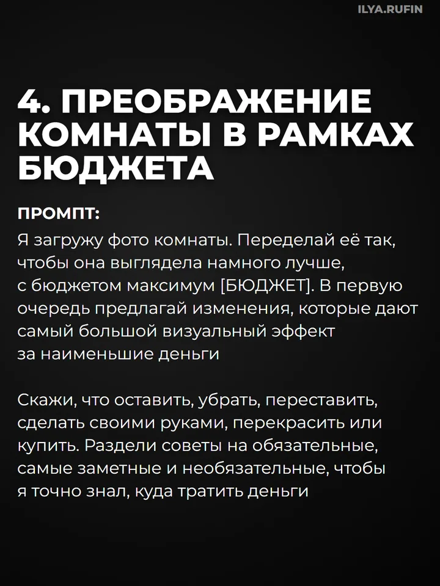

7 промптов для дизайна интерьера
Загрузи фото комнаты, и ChatGPT разберёт её как дизайнер: план, цвета, свет и расстановка мебели

Как пользоваться
- Открой ChatGPT, начни новый чат и прикрепи фото комнаты через «+»
- Нажми «Скопировать промпт» у нужного и вставь его в поле
- Замени то, что в [квадратных скобках], на своё и отправь
В промпте 6 оставь в скобках одно настроение, например «уютно». Для промпта 7 прикрепи фото нескольких комнат сразу
1. Полное преображение комнаты
Я загружу фото своей комнаты. Выступи в роли профессионального дизайнера интерьера. Проанализируй планировку, мебель, освещение, цвета, стены, пол, захламлённость, пустые места и общий визуальный баланс
Затем дай мне полный план преображения, взяв мою комнату как отправную точку. Скажи точно, что убрать, передвинуть, перекрасить, заменить, добавить и переставить, по порядку важности. Мой бюджет [БЮДЖЕТ], а любимый стиль [СТИЛЬ]
2. Пусть комната выглядит дорого
Проанализируй загруженное фото моей комнаты и покажи, как сделать, чтобы она выглядела заметно дороже без лишних трат. Найди самые дешёвые изменения, которые дадут самый большой визуальный эффект
Дай конкретные советы по освещению, шторам, цветам, расстановке мебели, декору стен, постельному белью, растениям, коврам и аксессуарам, исходя из того, что ты действительно видишь
3. Комната в стиле Pinterest
Переведи дизайн моей комнаты в стильное, современное пространство, достойное Pinterest. Сначала разбери, что сейчас делает комнату обычной или непривлекательной
Затем создай конкретную дизайн-концепцию: цветовая палитра, расстановка мебели, освещение, отделка стен, текстиль, декор, растения и финальные штрихи. Советы должны быть реальными для настоящего размера и планировки комнаты
4. Преображение комнаты в рамках бюджета
Я загружу фото комнаты. Переделай её так, чтобы она выглядела намного лучше, с бюджетом максимум [БЮДЖЕТ]. В первую очередь предлагай изменения, которые дают самый большой визуальный эффект за наименьшие деньги
Скажи, что оставить, убрать, переставить, сделать своими руками, перекрасить или купить. Раздели советы на обязательные, самые заметные и необязательные, чтобы я точно знал, куда тратить деньги
5. Исправь планировку комнаты
Проанализируй планировку моей комнаты по загруженному фото. Найди пустующее место, неудобную расстановку мебели, неудобные проходы, визуальный дисбаланс и зоны, из-за которых комната кажется меньше
Затем предложи новую расстановку из мебели, которая у меня уже есть. Объясни, куда именно поставить каждый крупный предмет и почему
6. Идеальный подбор цвета и света
Проанализируй загруженное фото моей комнаты и подбери лучшую цветовую палитру и освещение именно для этого пространства. Учти размер комнаты, дневной свет, мебель, пол, цвет стен и общую атмосферу
Дай конкретные цвета для стен, цветовую температуру ламп, расстановку светильников, советы по шторам и акцентные цвета. Цель: чтобы комната ощущалась [ПРОСТОРНЕЕ / РОСКОШНО / УЮТНО / СОВРЕМЕННО / СПОКОЙНО]
7. Дизайн-аудит всего дома
Я загружу фото разных частей своего дома. Разбери их вместе, а не каждую комнату по отдельности. Найди, где не сочетаются цвета, стили мебели, освещение, декор и переходы между комнатами
Затем создай единое направление дизайна для всего дома: общая цветовая палитра, материалы, стиль освещения, подход к мебели и язык декора. Скажи, что менять в первую очередь
Если что-то пошло не так
Ответ получился общим
Сфотографируй комнату целиком из угла при дневном свете и допиши в конце размер комнаты в метрах
ChatGPT не видит фото
Проверь, что превью фото стоит над полем ввода, и только потом отправляй промпт
ChatGPT ответил про скобки, а не по делу
Значит, в промпте остались слова в квадратных скобках. Замени их на своё и отправь ещё раз